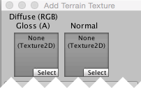

Terrain Textures
You can add texture images to the surface of a terrain to create coloration and fine detail. Since terrains are such large objects, it is standard practice to use a texture that repeats seamlessly and tile it over the surface (the repeat generally isn't noticeable from a character's viewpoint close to the ground). One texture will serve as the "background" image over the landscape but you can also paint areas of different textures to simulate different ground surfaces such as grass, desert and snow. The painted textures can be applied with variable transparency so you can have a gradual transition between grassy countryside and a sandy beach, for example.

Enabling Textures
The paintbrush button on the toolbar enables texture painting.

Initially, the terrain has no textures assigned for painting. If you click the Edit Textures button and select Add Texture from the menu, you will see the Add Terrain Texture window. Here you can set a texture and its properties.
Depending on the material type you set in Terrain Settings, the color channels of the main texture map may have different uses. These are listed below in Terrain Texture Settings.
Click on Select to see your texture assets in a separate Select Texture window (not shown). Click on the texture you want and it displays in the Add Terrain Texture window. (See Add Terrain Texture window, before and after, in Fig 1 below.)

Terrain Texture Settings
Depending on the material type you set in Terrain Settings, the color channels of the main texture map may have different uses. The different Add Terrain Texture windows are listed here.
Standard [image above in Fig 1]: RGB channels are the albedo color of the terrain surface, while alpha channel controls the smoothness. There is also a 'Metallic' slider which controls the overall look of the surface.
Diffuse: RGB channels are the diffuse color. Alpha channel is not used.

Specular: RGB channels are the diffuse color. Alpha channel is the gloss map.

Custom: How the splat map is used depends on your custom shader, but usually you want the RGB channels to be the base color.

Besides the main texture map, you can also specify a normal texture for all of the 3 built-in material types. The texture type of the normal texture used here must be 'Normal Map' (you can change the texture type of a texture asset in its import settings). Shader code that handles normal map will be turned on only when at least one normal texture is set for the terrain, so you don't need to pay the performance cost of normal map if you don't use them.
The Size property (just below the texture boxes) lets you set the width and height over which the image will stretch on the terrain's surface. The Offset property determines how far from the terrain's anchor point the tiling will start; you can set it to zero to start the tiling right in the corner. Once you have set the texture and properties to your liking, click the _Apply button to make the texture available to the terrain.
To make changes to an added terrain texture, select its thumbnail, click the 'Edit Textures' button and select 'Edit Texture...' from the menu. Or, you can simply double click on its thumbnail. To remove a terrain texture, select its thumbnail, click the 'Edit Textures' button and select 'Remove Texture' from the menu.
Note that if you want to assign a Texture to a Terrain, you need to open the Texture Importer and tick the Read/Write Enabled checkbox.
Texture Painting
The first texture you add will be used as a "background" to cover the terrain. However, you can add as many textures as you like; the subsequent ones will be available for painting using the familiar brush tools. Below the textures in the Terrain inspector, you will see the usual Brush Size and Opacity options but also an additional option called Target Strength. This sets the maximum opacity value that the brush will build up even if it passes over the same point repeatedly. This can be a useful way to add subtle patches of color variation within a single terrain type to break the monotony of a large, flat area with the same texture tile repeating over and over.